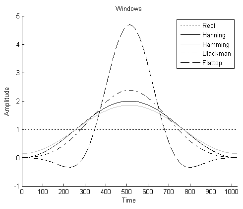
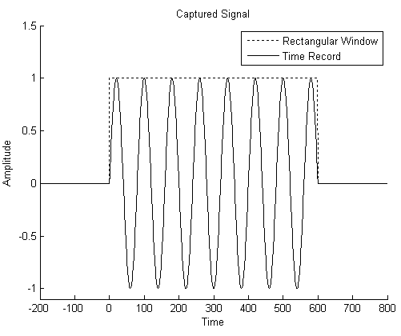
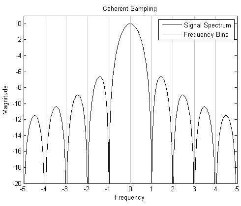
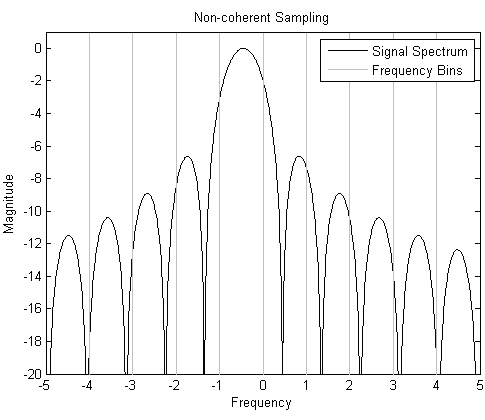
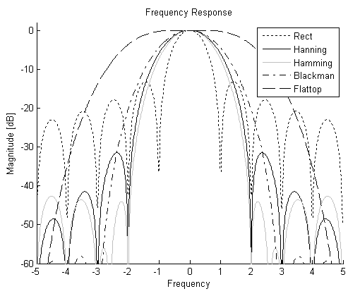

Window functions
Spectral leakage and windows
The best spectra are obtained when coherency conditions are fulfilled: every frequency component of the captured signal is represented with an exact integer number of cycles in the time record. An FFT of such a signal does not require any further processing, such as windowing.
However, if the captured signal is unknown or varies over time it might happen that the coherency condition can not be fulfilled: the time record contains a non-integer number of cycles of a signal component, the sampling setup is non-coherent. In this case, spectral leakage occurs.
Spectral leakage distorts a measurement in such a way that energy from a given frequency component is spread over adjacent frequencies. This effect can be minimized by applying windows: each sample of the time-domain data is multiplied with a corresponding coefficient, which is determined by the chosen window function.
As the beginning and the end of the window functions tend to zero the corresponding values of the data record are attenuated and thus the discontinuity of the time record is reduced.

Why does spectral leakage occur?
Only the power of a sinusoid of infinite duration is contained at a single frequency. The time record of any real captured signal, however, is limited in time. Mathematically this can be thought of as a signal infinite in duration multiplied with a rectangular-shaped window of uniform height.

In the frequency domain, this corresponds to a convolution of the single frequency of an endless sinusoid with the sinc-function, which is the Fourier transform of the rectangular function. The effect of this convolution is that energy of any sinusoidal segment is spread across the entire spectrum. In other words: Any finite-time data segment always exhibits spectral leakage as side lobes in the continuous spectrum regardless of whether it has been captured coherently or not.
Nevertheless, coherently sampled waveforms have a significant advantage: in the discrete frequency spectrum that results from the FFT, the single frequency bin of the endless sinusoid coincides with the main lobe of the sinc-function while the other frequency bins coincide with the zero-crossings. As a consequence, the side lobe information gets lost and the spectrum closely resembles the spectrum of an infinite-time segment. The user can easily identify the power of the well-contained fundamental signal in a single frequency bin.

If the time record of a signal does not contain an integral number of cycles, the continuous spectrum of the window is shifted from the main lobe center at a fraction of Δf corresponding to the difference between the frequency component and the frequency bins of the FFT. This shift causes the side lobes to appear in the spectrum, as the frequency bins do not coincide with the zero-crossings of the sinc-function any more. In addition, there will be some amplitude error at the frequency peak because the main lobe is sampled off center, the spectrum will be smeared.

How do windows reduce spectral leakage?
By applying windows other than the rectangular one, the effect of spectral leakage can be significantly reduced. The most important aspect here is the reduction of the high side lobe levels. The side lobe characteristics of the window directly affect the extent to which frequency components leak into adjacent frequency bins. The side lobe response of a strong sinusoidal signal can overpower the main lobe response of a nearby weak sinusoidal signal.
Another aspect is the frequency resolution of the windowed signal, which is limited by the width of the main lobe of the window spectrum. The ability to distinguish two closely-spaced frequency components increases as the main lobe of the window narrows. But as the main lobe narrows and spectral resolution improves, the window energy spreads into its side lobes, and spectral leakage worsens. In general, then, there is a trade off between leakage suppression, spectral resolution and amplitude measurement error.
For an integral number of cycles, however, all windows yield the same peak amplitude reading and have excellent amplitude accuracy.
Strategies for choosing windows
Unfortunately, there is not a single windowing function that is suitable for all situations. Tradeoffs must be understood to choose the window that is most appropriate for the application. To choose a spectral window, basically you must guess the signal's frequency content.

Rectangular window
The rectangular window does not apply any window function before the FFT. The maximum amplitude error due to window attenuation is up to 4 dB when the signal is at the extreme edge of a frequency bin.
This window is used with coherent signals and when the signal spectrum is rather flat or broadband in frequency content.
Hanning window
The Hann or Hanning window is basically a good compromise: it provides good selectivity near the top (about 6 dB down one frequency bin away from center and about 30 dB down two bins away), and the maximum amplitude error is about -1.5 dB.
The Hanning window is satisfactory in most cases as it has good frequency resolution as well as reduced spectral leakage. It is the window of choice for sine waves, combinations of sine waves, narrow-band random signals and signals containing strong interfering frequency components distant from the frequency of interest. It is also the best choice if the observed signal is completely unknown.
Blackman window
The Blackman window is a general purpose spectrum analysis window like the Hanning window. It has a reasonable frequency selectivity while the maximum amplitude error is less than -1.1 dB. With a maximum side lobe level of -58 dB, it provides a much better stopband attenuation than the Hanning window.
The Blackman window has almost the same application range as the Hanning window.
Flat-Top window
The Flat Top window has the widest main lobe and the lowest maximum side lobe level of all furnished windows: -95 dB. Its maximum amplitude error due to window attenuation is less than -0.01 dB even if the signal is at the extreme end of the bin. Due to the wide main lobe, its selectivity is poorer than that of the other windows furnished.
The Flat-Top window is designed for the greatest amplitude measurement accuracy and thus is the appropriate window for accurate amplitude measurements, such as when measuring individual harmonics.
Hamming window
The Hamming window has the narrowest main lobe and thus the best frequency selectivity of all furnished windows. Adjacent frequency bins average about 7 dB down and two bins away the response is about 40 dB down. The maximum amplitude error is about -1.7 dB. The Hamming window has considerable side lobes starting only 40-50 dB below the center bin, or about 4 bins away from center.
The Hamming window is the window of choice for closely spaced sine waves as it has the best selectivity near the top; however it has limited rejection of more-distant signals.
Functional changes
- Introduced before SmarTest 6.3.2